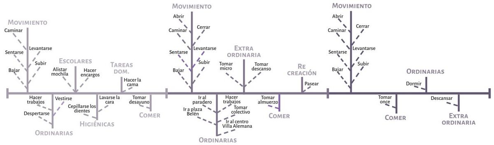
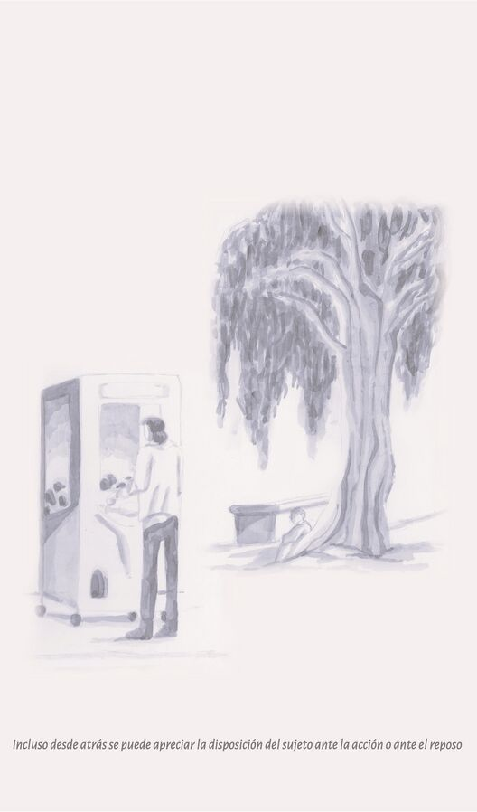
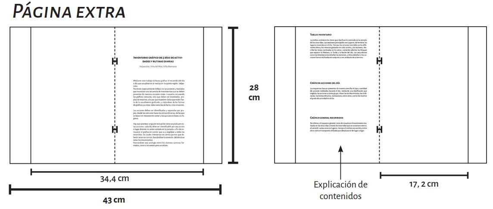

En los ciclos anteriores se había hecho un recorrido por Valparaíso, ya sea en la Facultad de Diseño o en la propia ciudad; ahora en el ciclo 3, ese recorrido se extiende por la propia quinta región, pues, lo que se busca ahora es graficar el recorrido que se hace hasta llegar a la universidad y regresar a casa por los siguientes cinco días, de ida y vuelta. Inventariarse el día enumerando y clasificando las acciones en grupos, registrando el tiempo que se toma llegar a cada lugar, el tiempo que toma realizar cada acción significante para que ese día se diferencie de los demás; y que se presente en unas tablas que presenten la información de una manera gráfica y entendible, teniendo sus jerarquizaciones internas que se muestran a través de la tipografía, el tamaño de letra y el contraste con el fondo.
Los gráficos deben ser invenciones propias que puedan visualizar el recorrido en conjunto de cada día de una manera en que formen una convivencia que creen una composición compleja a la par que inteligible; cada elemento formará parte de la edición 1.
La edición 2 muestra la rutina realizada en la travesía de Argentina, pero en vez de hablar de lo personal, se trata de las actividades realizadas del grupo como tal, las faenas, los actos, los recorridos realizados en Salta, y las actividades ocurridas en aquellos lugares. Cambiando no solo el sujeto del recorrido, sino también como se presentan los elementos en el espacio gráfico, y como se despliega el cuerpo gráfico para presentarlo, ofreciendo más dinamismo para poder presentar y traer la travesía a través del movimiento no solo las acciones, sino también las páginas.
El cronograma de la primera edición era sumamente detallado respecto a las acciones realizadas en el día, debido a que se centraba en la rutina personal tenía una mayor complejidad a lo que se refería al registro de la información, siendo las descripciones de las acciones eran lo que más ocupaba espacio en la tabla.
La tipografía utilizada es Alegreya Sans, para resaltar lo más importante en el gráfico se agranda el tamaño y el grosor de la letra, y para lo secundario se afinaba el grosor y se disminuía el tamaño de la letra, dando esa sensación de que la letra era de color gris, y en ciertas secciones lo era.
El gráfico para cada día se hizo agrupando las acciones realizadas y graficándolas a través de la jornada del día, mostrando cuál era la frecuencia de realizar más unas que otras.

Para el gráfico general se utilizaron imágenes de los recorridos realizados y conectados a través de los puntos donde se sube a una estación de metro para dar consistencia y coherencia a su inclusión en el gráfico.

El modelo es exactamente el mismo del de la primera edición, pues se tiene que producir una consistencia entre ambas versiones, si se aplicaba un cambio en una en cuanto al diseño de algún gráfico debía hacerse también en la otra. En este caso el cambio no fue más allá del color más apagado para acercarse al gris, ya que es un color muy utilizado en cuanto a la tipografía. La información es menor dado a que se describen meramente las acciones realizadas en grupo, ya que se trataba de mostrar el proceso de todo lo realizado en la travesía, solo dando meramente objetivos de faenas, actividades o traslados realizados por los talleres.

Debido a la separación de las hojas debido al cambio de diagramación los gráficos están separados entre sí y se vuelven una versión simplificada del original en pos de favorecer al movimiento del despliegue.
A diferencia de la primera edición, en la segunda se implementan los croquis, que en varias de las páginas se utilizan para crear una nueva composición que genere una nueva frase.
Los croquis fueron realizados en la bitácora de viaje de la travesía, se dibujaba en cualquier instancia posible, sobre todo durante el viaje en bus (Imagen 1 y 2), o en la estancia en los lugares visitados (Imagen 3 y 4), conforme pasaron los días decidí implementar sombras mediante destacadores (Imagen 4, 5 y 6), o en los últimos tinta china (Imagen 7 y 8).
Las matrices utilizadas eran de linóleo, los grabados realizados en ellas fueron a partir de los croquis realizados en la travesía, con los cuales se debe de desarrollar unas propuestas (Imagen 15). Para la primera propuesta se juntaron dos croquis (Imagen 13), rehaciendo el del lado de la izquierda para que quedara coherente con las posiciones de los sujetos del croquis del lado derecho, una vez arreglado la composición se traspasa al papel mantequilla los elementos (Imagen 9) y se traspasan por el lado contrario a la matriz, después se aplica tinta aplicando el alto contraste (Imagen 10 y 11), siendo las partes blancas las que se remueven, se empieza a tallar aplicando textura, no debiendo ser los trazos uniformes, sino que se formara cierto camino de luz entre la negrura (Imagen 12). Después las linografías se imprimen a negro (Imagen 14 y 16) y después a color.
Para las impresiones se utilizó papel hilado 6, y para la portada opalina de 200 grms. En la edición 1 se utilizó dos tiros de 110x28 cm, para la página larga y la portada y una hoja doble carta; para la segunda edición se utilizaron tres tiros para las páginas, incluyendo la página extra y un tiro para la portada.
En la primera edición solo se utilizaron corchetes, en la edición 2 no solo se utilizaron corchetes sino también se unieron páginas mediante el acoplamientos con cortes.
Debido al número que aumentó de páginas en la edición 2, se construyó un lomo en la portada de la edición 2, se une con unos corchetes que se ponen a la esquina del margen derecho.
La diferencia con la página extra de la edición 2, es que el resumen y el título están separados, utilizando la página que está en blanco del primer tiro como página de gracia, pudiendo usar la primera de la página extra como portadilla para el título.
Edición 1
Edición 2